Diário de oração · 30 dias
Um diário para imprimir ou usar no celular. Cada dia traz um tema da vida dos filhos, um versículo, uma oração para fazer com o nome de cada um, uma pergunta para você e um gesto simples para viver com eles.
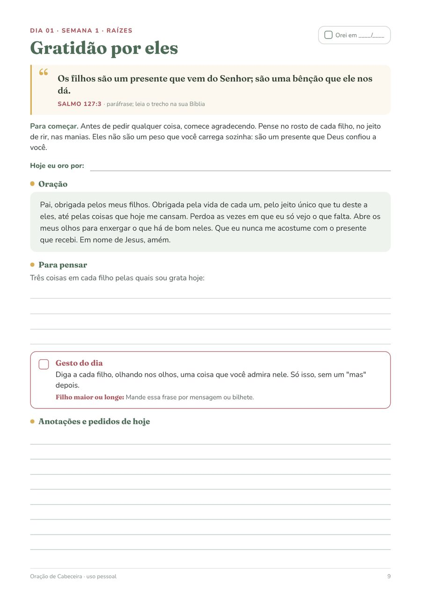
Compra única · PDF A4 com 48 páginas · garantia de 7 dias
Quase toda mãe e avó conhece estas cenas:
O Oração de Cabeceira organiza isso em 30 páginas: um tema por dia, a oração já escrita e um gesto pequeno para fazer com os filhos. Você só precisa abrir na página do dia.
O que é
Cada dia ocupa uma página e segue sempre a mesma ordem: tema, versículo em paráfrase com a referência, um parágrafo curto, espaço para o nome de cada filho, a oração, uma pergunta para você e o gesto do dia, com uma versão para filho adulto ou que mora longe.
As quatro semanas cobrem quem eles são, o coração (medo, raiva, tristeza, perdão), o dia a dia (escola, amizades, telas, sono) e o caminho (escolhas, proteção, futuro).
Por dentro
Imagens reais do PDF que você recebe.
Versículo, oração com o nome do filho, pergunta, gesto e espaço para anotar. Dez minutos.
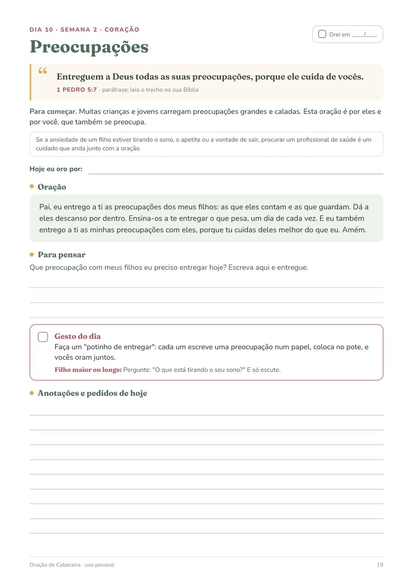
Um bilhete na mochila, uma pergunta no jantar, uma bênção na hora de dormir. Com versão para filho adulto ou longe.
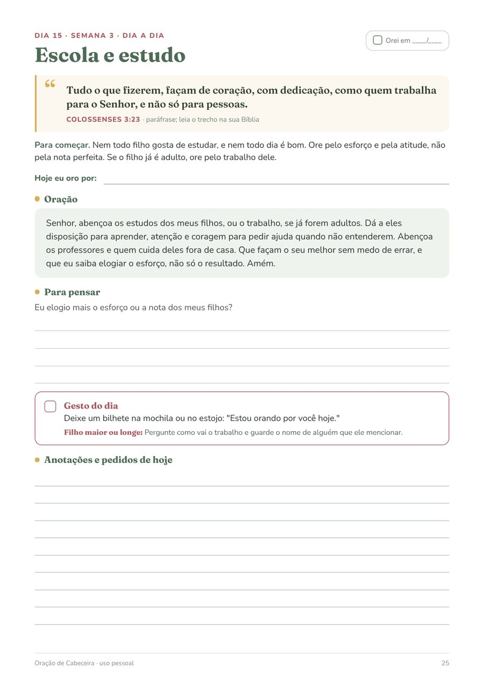
Para marcar cada dia em que você orou. Se pular um dia, siga do próximo.
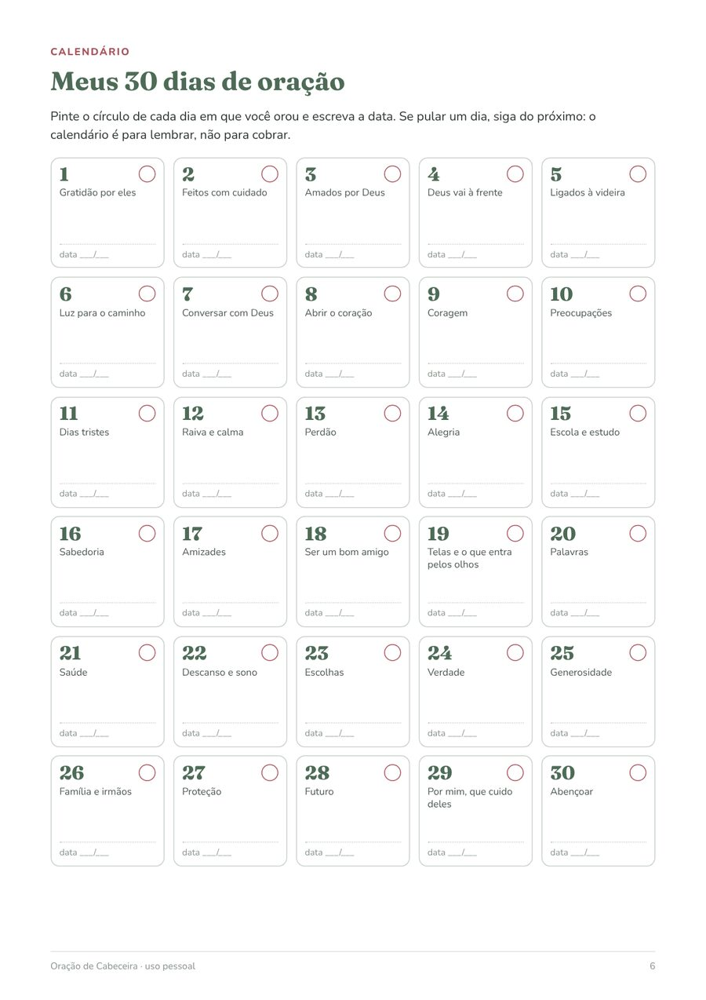
Como ele está, os pedidos, o que aconteceu e os agradecimentos.
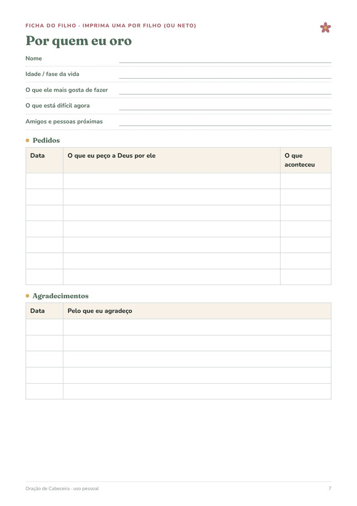
Uma página para o dia em que nada sai como planejado: um minuto, com a bênção da hora de dormir.
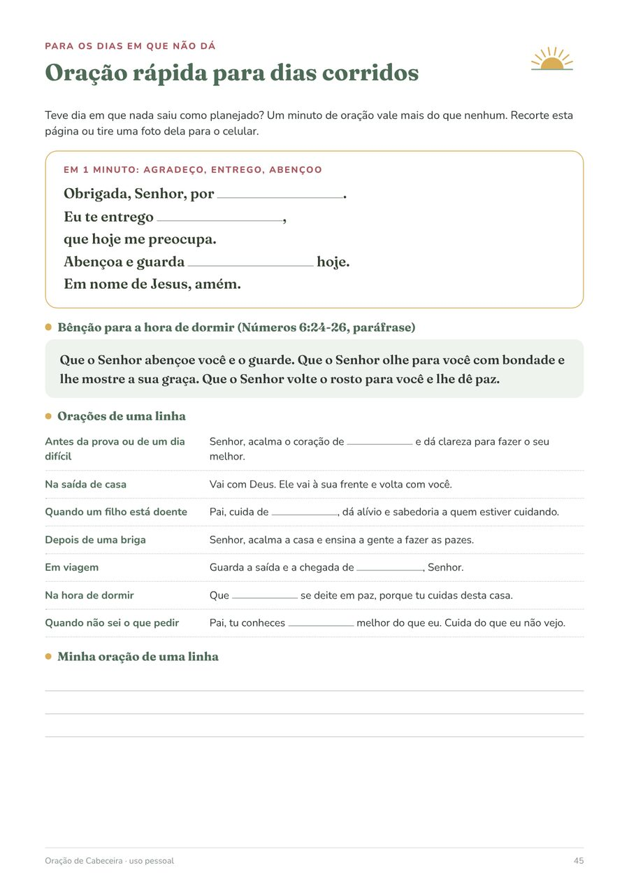
No fim de cada semana, cinco minutos para anotar o que você percebeu nos filhos e em você.
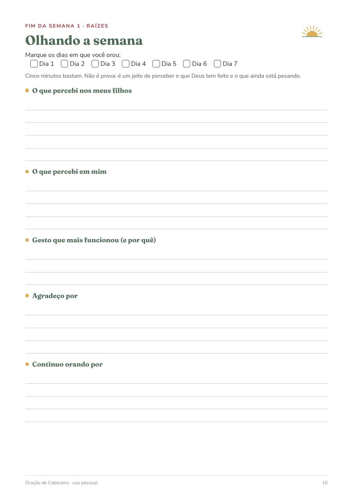
O que vem
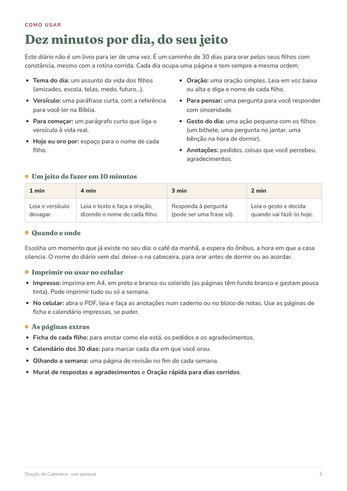
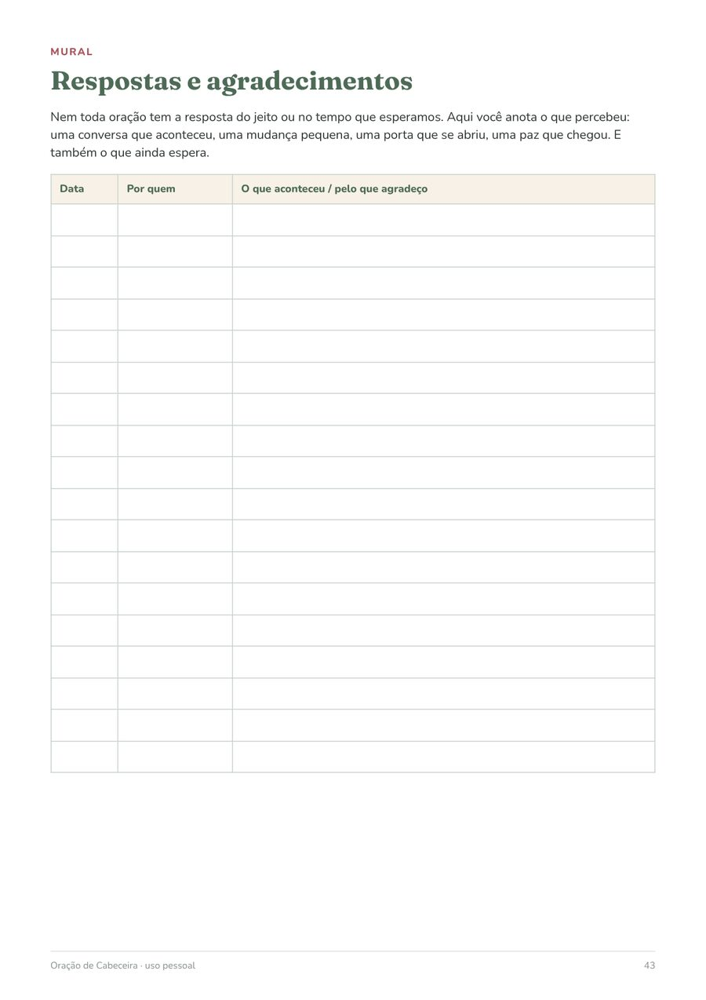
Opcional na hora do pagamento
60 cartões com versículos em paráfrase e bênçãos curtas, para recortar e deixar na lancheira, debaixo do travesseiro ou no espelho. 8 por folha A4, com espaço para você assinar e 4 cartões em branco para escrever a sua bênção. Combinam com os gestos do diário.
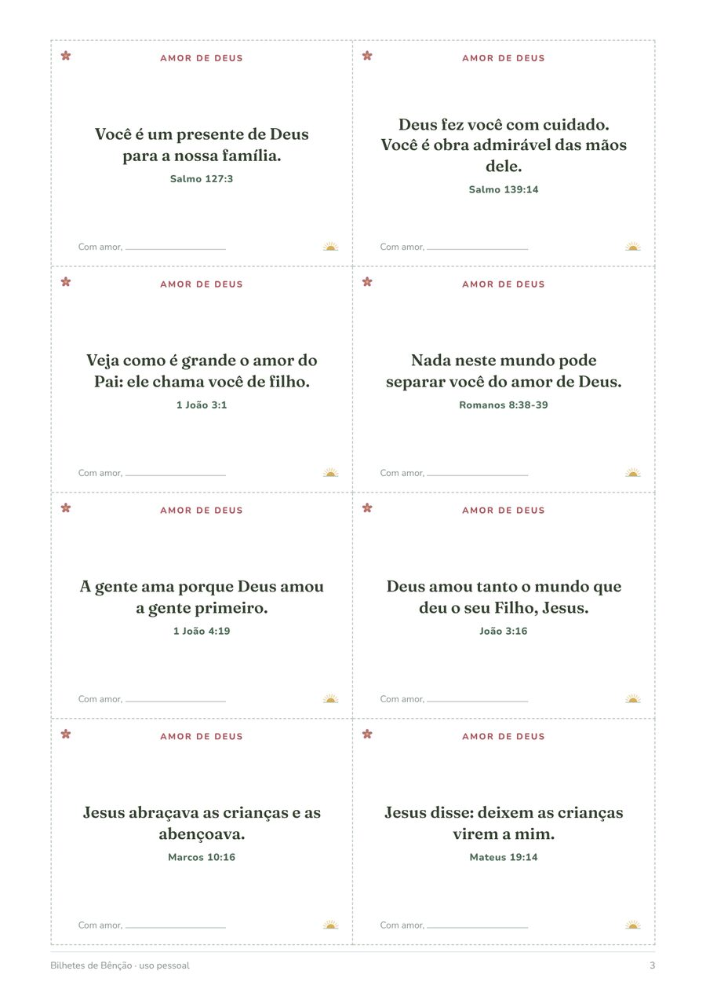
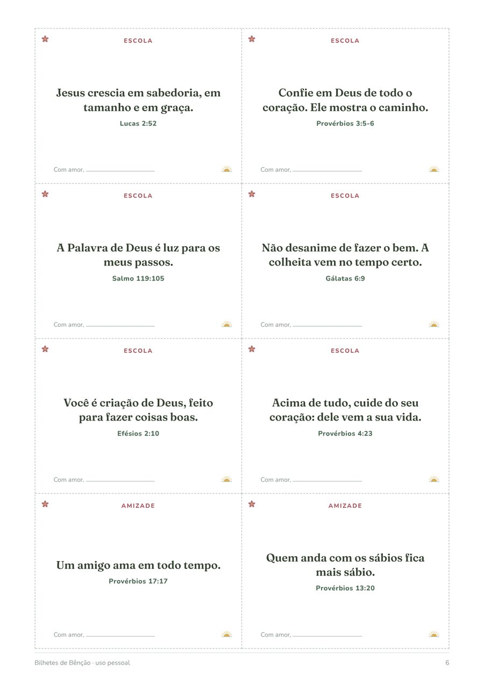
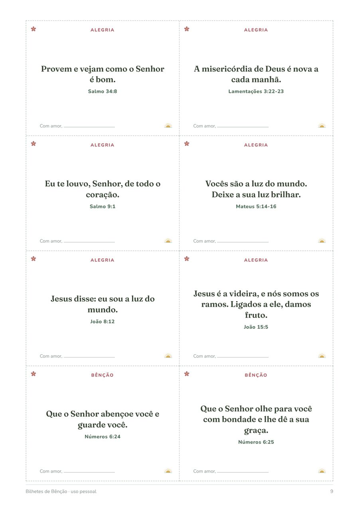
Não é obrigatório: o produto principal funciona sem ele. Aparece como opção na página de pagamento.
Oração de Cabeceira · 30 dias
compra única, não é assinatura
Diário em PDF com 48 páginas: 30 dias de oração, ficha de cada filho, calendário, revisões semanais, mural de respostas e oração rápida.
Quero o diárioPagamento e entrega pela Kiwify. Os arquivos ficam na área de membros para baixar.
Não. Você pode abrir o PDF no celular, ler a página do dia e anotar num caderno. Se puder, imprima pelo menos a ficha de cada filho e o calendário.
Uns 10 minutos: 1 para o versículo, 4 para o texto e a oração, 3 para a pergunta e 2 para decidir quando fazer o gesto. Em dia corrido, use a página de oração rápida.
A linguagem é cristã e bíblica, sem doutrina de uma denominação específica. As orações são simples e podem ser adaptadas ao jeito da sua igreja.
São paráfrases curtas, escritas para o diário, sempre com a referência (livro, capítulo e versículo). A ideia é que você leia o trecho completo na Bíblia que já usa.
Sim. Cada gesto do dia tem uma versão "filho maior ou longe": uma mensagem, uma ligação, uma pergunta. Avós podem trocar "filhos" por "netos".
Continue de onde parou. O diário não é corrida: 30 dias de oração podem levar seis semanas.
É um complemento opcional de R$ 9,90: 60 cartões com versículos curtos para imprimir e recortar. O diário funciona completo sem ele.
Depois da confirmação do pagamento, a Kiwify envia por e-mail o acesso à área de membros. Lá estão os arquivos para baixar.
A licença é de uso pessoal (você pode imprimir quantas vezes quiser para a sua família). Não é permitido revender nem repassar os arquivos.
Você tem 7 dias de garantia. Peça o reembolso pela Kiwify.
Escreva para joaovictor+P009@rglogistica.com.br.